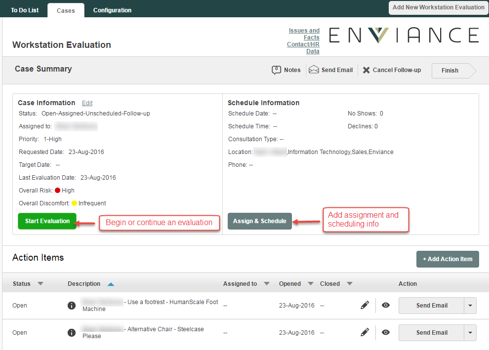

The Case Summary page shows the latest case information.
If you have permission to view the Case Summary page, the system will navigate you to the case summary page after creating a new case, where, if you have the permission, you can schedule the appointment.
You can also get to the Case Summary page from the Cases page by clicking on the Type link.
The case summary page provides the dashboard with all relevant information and actions that are available to be performed on the case at any given time.

In the above screen, the user can view the status of the case, see any assignment and scheduling information, the history of the case and the available actions. In this example, the user can both assign & schedule as well as start an evaluation.